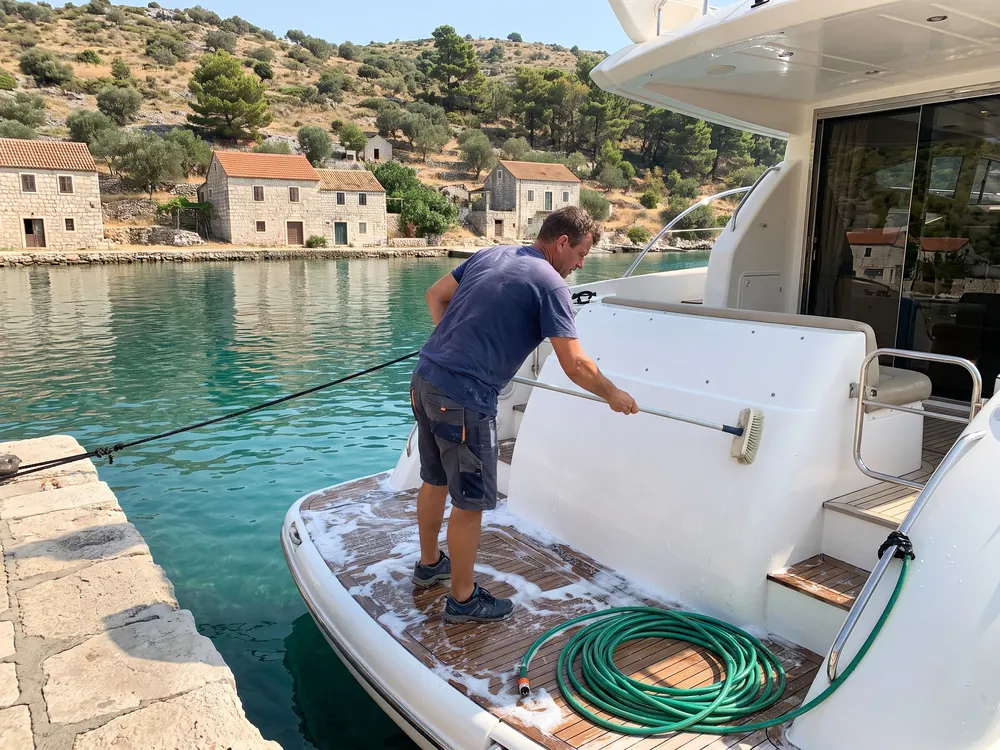
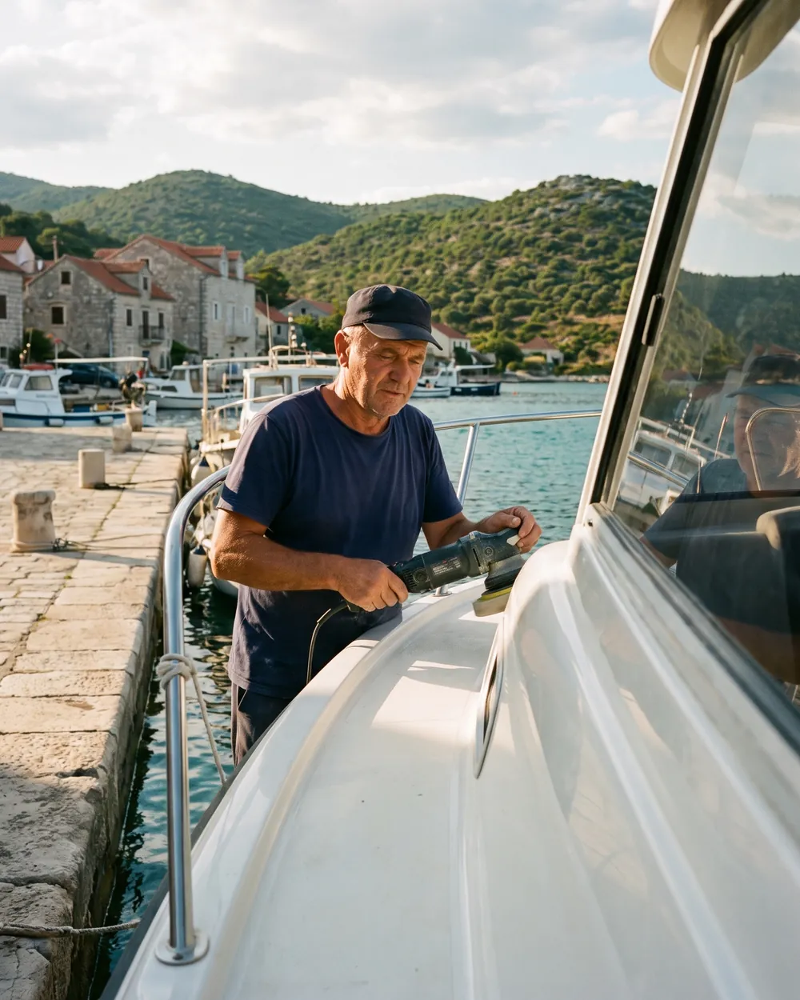
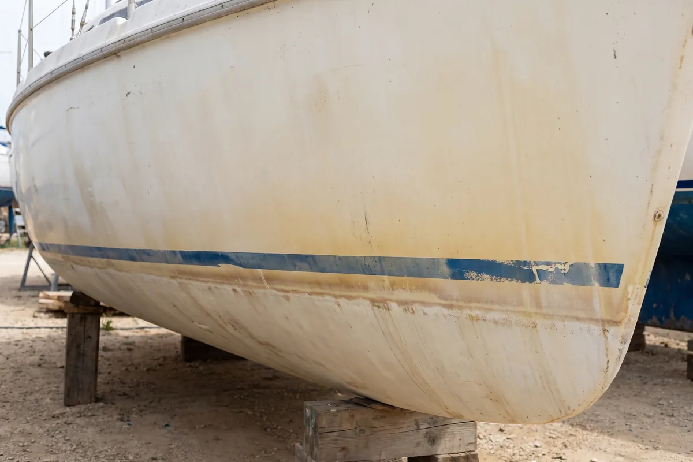
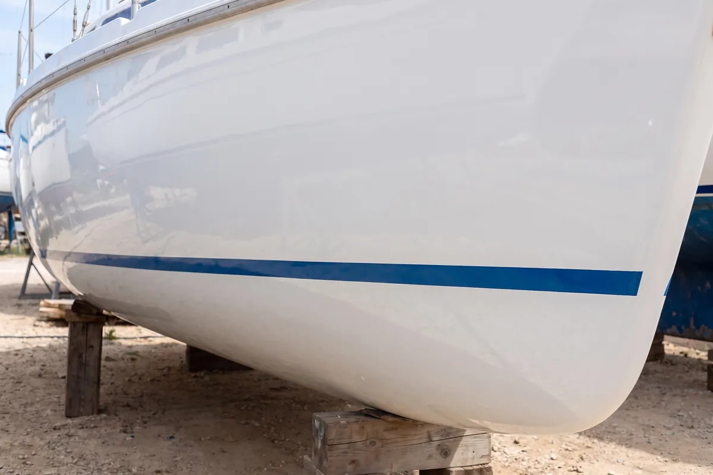
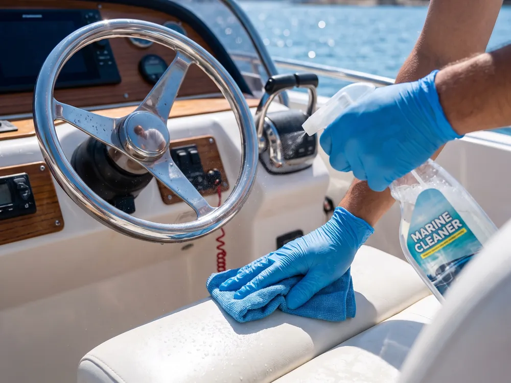
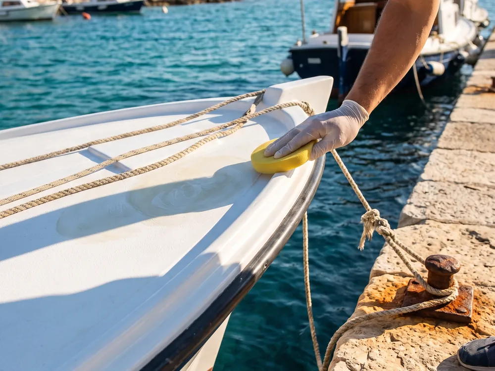
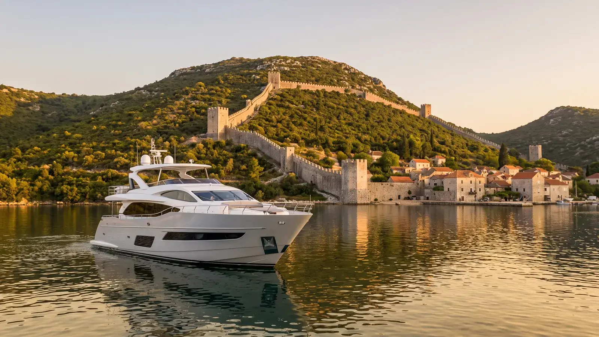

Pranje brodovaBoat washing
Temeljito čišćenje plovila od soli, prljavštine i naslaga.Thorough cleaning of salt, dirt and deposits.
Detailing i održavanje plovilaBoat detailing and care
Pranje, poliranje i detailing za sve vrste plovila, od manjih brodica do luksuznih jahti. Iz Stona, za cijelo područje Dubrovnika.Washing, polishing and detailing for every kind of vessel, from small boats to luxury yachts. Based in Ston, covering the whole Dubrovnik area.
Mobilna usluga: dolazimo na vašu lokaciju, na vez ili u marinu.Mobile service: we come to your location, berth or marina.

Prije i poslijeBefore and after


PrijeBeforePoslijeAfterPovucite za usporedbuDrag to compare
S vremenom brodske površine gube sjaj zbog soli, sunca i vremenskih uvjeta. Poliranje gelcoata:Over time, boat surfaces lose their shine to salt, sun and weather. Gelcoat polishing:
UslugeServices
Profesionalna oprema i kvalitetna sredstva, uz individualni pristup svakom plovilu.Professional equipment and quality products, with an individual approach to every vessel.

Temeljito čišćenje plovila od soli, prljavštine i naslaga.Thorough cleaning of salt, dirt and deposits.

Dubinsko čišćenje svih dijelova plovila, unutarnjih i vanjskih.Deep cleaning of every part of the vessel, inside and out.

Zaštitni slojevi protiv UV zračenja i habanja.Protective coatings against UV and wear.
Profesionalno poliranje gelcoata za vraćanje sjaja.Professional gelcoat polishing to bring back the shine.
Obnova oštećenih i izblijedjelih površina.Restoring damaged and faded surfaces.
Premium usluga za luksuzna plovila.A premium service for luxury yachts.
Redovita njega i priprema za sezonu.Regular care and preparation for the season.

Svaki rad snimam prije i poslije. Pogledajte ih na Instagramu i Facebooku.I photograph every job before and after. See them on Instagram and Facebook.
Zašto JL DetailingWhy JL Detailing
Profesionalna oprema i vrhunski proizvodi za njegu plovila.Professional equipment and top products for boat care.
Svakom brodu pristupamo s maksimalnom pažnjom.We approach every boat with full attention.
Rezultati koji traju i štite površine.Results that last and protect the surfaces.
Usluge prilagođene vašem plovilu.Services tailored to your vessel.
Dolazimo na vašu lokaciju.We come to your location.
Garancija zadovoljstva.Satisfaction guaranteed.
Česta pitanjaFAQ
Da, usluga je mobilna. Dolazimo na vašu lokaciju na području Stona i Dubrovnika.Yes, the service is mobile. We come to your location in the Ston and Dubrovnik area.
Sve vrste plovila, od manjih brodica do luksuznih jahti.Every kind of vessel, from small boats to luxury yachts.
Kad gelcoat izgubi sjaj ili se pojavi oksidacija, i kao priprema za sezonu, da brod bude spreman za plovidbu.When the gelcoat loses its shine or oxidation appears, and as preparation for the season, so the boat is ready to sail.
Nazovite 098 227 612 ili pošaljite upit s vrstom i duljinom plovila i mjestom gdje se nalazi.Call +385 98 227 612 or send an enquiry with the type and length of the vessel and where it is moored.
UpitEnquiry